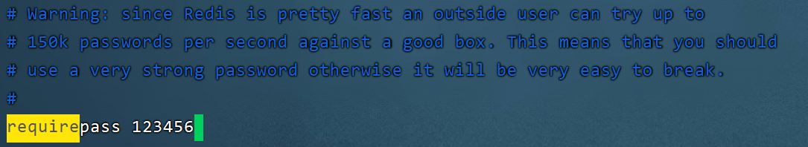
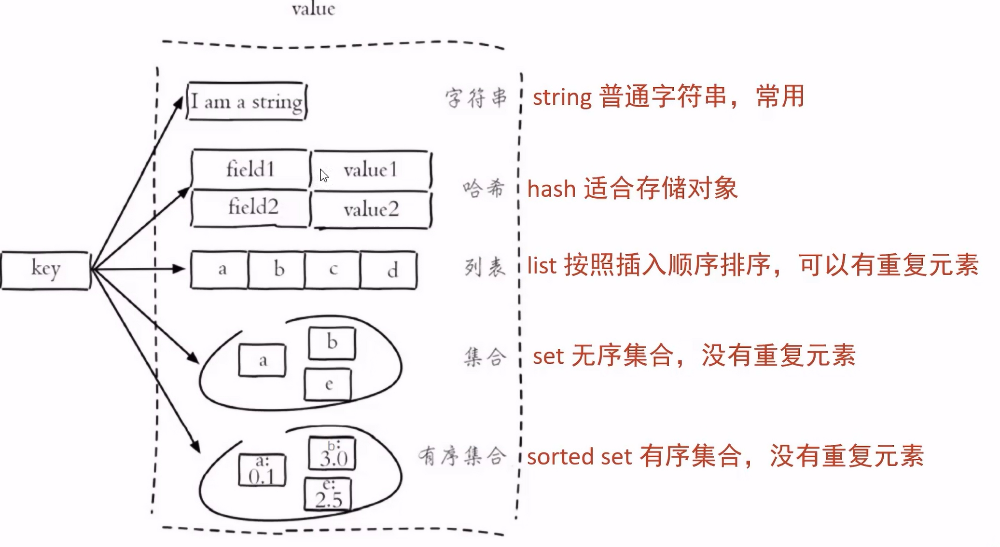

1. Redis入门
- Redis是一个基于内存的
key-value结构数据库- 基于内存存储，读写性能高
- 适合存储热点数据（热点商品、咨询、新闻）
- 官网：https://redis.io/
1.1 Redis简介
- Redis是用C语言开发的一个开源的、高性能的键值对(key-value)数据库，官方提供的数据是可以达到100000+的QPS（每秒内查询次数）。它存储的value类型比较丰富，也被称为结构化NoSql数据库
- NoSql(Not Only Sql)，不仅仅是SQL，泛指非关系型数据库，NoSql数据库并不是要取代关系型数据库，而是关系型数据库的补充
关系型数据库(RDBMS)：MySQL、Oracl、DB2、SQLServer
非关系型数据库(NoSql)：Redis、Mongo DB、MemCached
- Redis应用场景：缓存、消息队列、任务队列、分布式锁
1.2 下载与安装
- 这里我们在Linux和Windows上都装一下
1.2.1 Windows安装Redis
- Windows 版：https://github.com/microsoftarchive/redis/releases
- 直接下载对应版本的
.zip压缩包，直接解压之后
1.2.2 Linux安装Redis
Linux系统安装Redis步骤：
- 将Redis安装包上传到Linux
- 解压安装包，改成你自己的redis版本，路径我习惯解压到
/usr/local
tar -zxvf redisVersion.tar.gz -C /usr/local- 安装Redis的依赖环境gcc，我的云服务器已经装过了，本地的Linux还没装
## 安装依赖环境 yum install gcc-c++- 进入
/usr/local/redis根目录，进行编译
## 进入到根目录 cd /usr/local/redis根目录 ## 编译 make- 进入redis的src目录，进行安装
## 进入到src目录 cd /usr/local/redis根目录/src ## 进行安装 make install
1.3 服务启动与停止
1.3.1 Linux启动与停止
- 进入到
/src目录下，执行redis-server即可启动服务，默认端口号为6379
## 进入到根目录
cd /usr/local/redis根目录/src
## 执行redis-server
./redis-server1.3.2 Linux设置后台运行
- 进入到redis根目录下，修改配置redis.conf文件
## 进入到redis根目录下
cd /usr/local/redis根目录
## 修改配置文件
vim redis.conf- 找到
daemonize on字段，将其修改为daemonize yes - 在redis根目录以redis.conf作为配置文件在后台运行
src/redis-server ./redis.conf1.3.3 Linux开启密码校验
- 还是修改redis.conf配置文件，找到
requirepass这行，将其注释去掉，并在后面写上自己的密码 - 
- 然后杀掉原进程再重新启动
## 重新启动
src/redis-server ./redis.conf
## 登录时同时进行认证
src/redis-cli -h localhost -p 6379 -a 密码- 修改完毕之后还是杀进程，然后重启服务
1.3.4 Linux开启远程连接
- 还是修改redis.conf配置文件，找到
bind 127.0.0.1这行，把这行注释掉 - 之后设置防火墙，开启6379端口
## 开启6379端口
firewall-cmd --zone=public --add-port=6379/tcp --permanent
## 设置立即生效
firewall-cmd --reload
## 查看开放的端口
firewall-cmd --zone=public --list-ports- 最后在Windows的redis根目录下，按住Shift+右键打开PowerShell窗口，连接Linux的Redis
.\redis-cli.exe -h 服务器地址 -p 6379 -a 密码2. Redis数据类型
2.1 介绍
Redis存储的是key-value结构的数据，其中key是字符串类型，value有5中常用的数据类型
- 字符串：String
- 哈希：Hash
- 列表：List
- 集合：Set
- 有序集合：Sorted Set

2.2 字符串(String)常用命令
| 命令 | 描述 |
|---|---|
| SET key value | 设置指定key的值 |
| GET key | 获取指定key的值 |
| SETEX key seconds value | 设置指定key的值，并将key的过期时间设为seconds秒 |
| SETNX key value | 只有在key不存在时设置key的值 |
2.3 哈希(Hash)常用命令
Redis Hash是一个String类型的Field和Value的映射表，Hash特别适合用于存储对象
| 命令 | 描述 |
|---|---|
| HSET key field value | 将哈希表key 中的字段field的值设为value |
| HGET key field | 获取存储在哈希表key中指定字段field的值 |
| HDEL key field | 删除存储在哈希表key中的指定字段field |
| HKEYS key | 获取哈希表key中所有字段 |
| HVALS key | 获取哈希表key中所有值 |
| HGETALL key | 获取在哈希表中指定key的所有字段和值 |
2.4 列表(List)常用命令
Redis List是简单的字符串列表，按照插入顺序排序
| 命令 | 描述 |
|---|---|
LPUSH key value1 [value2] |
将一个或多个值插入到列表key头部 |
LRANGE key start stop |
获取列表key指定范围内的元素 |
RPOP key |
移除并获取列表key最后一个元素 |
LLEN key |
获取列表key长度 |
BRPOP key1 [key2] timeout |
移出并获取列表key的最后一个元素（如果列表没有元素会阻塞列表直到等待超时或发现可弹出元素为止） |
2.5 集合(Set)常用命令
Redis set是String类型的无序集合。集合成员是唯一的，这就意味着集合中不能出现重复的数据
| 命令 | 描述 |
|---|---|
| SADD key member1 [member2] | 向集合添加一个或多个成员 |
| SMEMBERS key | 返回集合中的所有成员 |
| SCARD key | 获取集合的成员数 |
| SINTER key1 [key2] | 返回给定所有集合的交集 |
| SUNION key1 [key2] | 返回所有给定集合的并集 |
| SDIFF key1 [key2] | 返回给定所有集合的差集（key1 - key2） |
| SREM key member1 [member2] | 移除集合中一个或多个成员 |
2.6 有序集合(Sorted Set)常用命令
Redis Sorted Set有序集合是String类型元素的集合，且不允许重复的成员。每个元素都会关联一个double类型的分数(score) 。Redis正是通过分数来为集合中的成员进行从小到大排序。有序集合的成员是唯一的，但分数却可以重复。
| 命令 | 描述 |
|---|---|
| ZADD key score1 member1 [score2 member2] | 向有序集合添加一个或多个成员，或者更新已存在成员的分数 |
| ZRANGE key start stop [WITHSCORES] | 通过索引区间返回有序集合中指定区间内的成员【同时展示对应的分数】 |
| ZINCRBY key increment member | 有序集合中对指定成员的分数加上增量increment |
| ZREM key member [member …] | 移除有序集合中的一个或多个成员 |
2.7 通用命令
| 命令 | 描述 |
|---|---|
| KEYs pattern | 查找所有符合给定模式(pattern)的key |
| EXISTs key | 检查给定key是否存在 |
| TYPE key | 返回key所储存的值的类型 |
| TTL key | 返回给定key的剩余生存时间(TTL, time to live)，以秒为单位 |
| DEL key | 该命令用于在key存在时删除key |
更多详细的命令可以查看官方文档：https://www.redis.net.cn/order/
3. 在Java中使用Redis
3.1 简介
- Redis的Java客户端有很多，官方推荐的有三种
JedisLettuceRedisson
- Spring对Redis客户端进行了整合，提供了SpringDataRedis，在Spring Boot项目中还提供了对应的Starter，即
spring-boot-starter-data-redis
3.2 Jedis
- 使用Jedis的步骤
- 获取连接
- 执行操作
- 关闭连接
- 在此之前我们需要导入一下Jedis的maven坐标
<dependency>
<groupId>redis.clients</groupId>
<artifactId>jedis</artifactId>
<version>2.8.0</version>
</dependency>- 编写测试类
@SpringBootTest
class RedisTestApplicationTests {
@Test
void contextLoads() {
//1. 获取连接
Jedis jedis = new Jedis("localhost", 6379);
//2. 执行具体操作
jedis.set("name", "Hades");
jedis.hset("stu", "name", "Jerry");
jedis.hset("stu", "age", "18");
jedis.hset("stu", "num", "4204000400");
Map<String, String> map = jedis.hgetAll("stu");
Set<String> keySet = map.keySet();
for (String key : keySet) {
String value = map.get(key);
System.out.println(key + ":" + value);
}
String name = jedis.get("name");
System.out.println(name);
//3. 关闭连接
jedis.close();
}
}- 输出结果
num:4204000400
name:Jerry
age:18
Hades
- Jedis我们了解一下即可，大多数情况下我们还是用SpringDataRedis的
3.3 Spring Data Redis
- SpringBoot项目中，可以使用SpringDataRedis来简化Redis（常用）
- Spring Data Redis中提供了一个高度封装的类：RedisTemplate，针对jedis客户端中大量api进行了归类封装，将同一类型操作封装为operation接口，具体分类如下：
- ValueOperations：简单K-V操作
- SetOperations：set类型数据操作
- ZSetOperations：zset类型数据操作
- HashOperations：针对map类型的数据操作
- ListOperations：针对list类型的数据操作
- 使用SpringDataRedis，我们首先需要导入它的maven坐标
<!--Spring Boot-redis的依赖包-->
<dependency>
<groupId>org.springframework.boot</groupId>
<artifactId>spring-boot-starter-data-redis</artifactId>
</dependency>- 之后重新设置一下序列化器，防止出现乱码，在config包下创建
RedisConfig配置类
@Configuration
public class RedisConfig extends CachingConfigurerSupport {
@Bean
public RedisTemplate<Object, Object> redisTemplate(RedisConnectionFactory connectionFactory) {
RedisTemplate<Object, Object> redisTemplate = new RedisTemplate<>();
//默认的Key序列化器为：JdkSerializationRedisSerializer
redisTemplate.setKeySerializer(new StringRedisSerializer());
redisTemplate.setHashKeySerializer(new StringRedisSerializer());
redisTemplate.setConnectionFactory(connectionFactory);
return redisTemplate;
}
}- 随后配置一下连接redis的相关配置
spring:
redis:
host: localhost
port: 6379
#password: root
database: 0 #操作的是0号数据库
jedis:
#Redis连接池配置
pool:
max-active: 8 #最大连接数
max-wait: 1ms #连接池最大阻塞等待时间
max-idle: 4 #连接池中的最大空闲连接
min-idle: 0 #连接池中的最小空闲连接String类型数据操作
@Test
void stringTest() {
//获取对象
ValueOperations valueOperations = redisTemplate.opsForValue();
//设置name为Hades
valueOperations.set("name","Hades");
String name = (String) valueOperations.get("name");
System.out.println(name);
//设置age为9527，有效时间10秒
valueOperations.set("age", "9527", 10, TimeUnit.SECONDS);
String age = (String) valueOperations.get("age");
System.out.println(age);
//如果不存在，则设置name为Kyle
Boolean aBoolean = valueOperations.setIfAbsent("name", "Kyle");
System.out.println(aBoolean);
}输出结果如下，由于name已经存在，故Kyle设置失败，最后返回false，10秒过后，我们再去redis中get name，则输出nil，表示不存在
Hades
9527
false
Hash类型数据操作
@Test
void hashTest() {
HashOperations hashOperations = redisTemplate.opsForHash();
hashOperations.put("4204000400", "name", "Hades");
hashOperations.put("4204000400", "age", "18");
hashOperations.put("4204000400", "hobby", "Apex");
//获取map集合
Map<String, String> map = hashOperations.entries("4204000400");
Set<String> keySet = map.keySet();
for (String hashKey : keySet) {
System.out.println(hashKey + ":" + map.get(hashKey));
}
System.out.println("$$$$$$$$$$$$$$$");
//只获取keys
Set<String> keys = hashOperations.keys("4204000400");
for (String key : keys) {
System.out.println(key);
}
System.out.println("$$$$$$$$$$$$$$$");
//只获取values
List<String> values = hashOperations.values("4204000400");
for (String value : values) {
System.out.println(value);
}
}输出结果如下
name:Hades
age:18
hobby:Apex
$$$$$$$$$$$$$$$
name
age
hobby
$$$$$$$$$$$$$$$
Hades
18
Apex
List类型数据操作
@Test
void listTest() {
ListOperations listOperations = redisTemplate.opsForList();
//存数据
listOperations.leftPush("testData", "A");
listOperations.leftPushAll("testData", "B", "C", "D");
List<String> testDatas = listOperations.range("testData", 0, -1);
//遍历
for (String tableData : testDatas) {
System.out.print(tableData + " ");
}
System.out.println();
//获取当前list长度，用于遍历
Long size = listOperations.size("testData");
int value = size.intValue();
//遍历输出并删除
for (int i = 0; i < value; i++) {
System.out.print(listOperations.leftPop("testData") + " ");
}
//最后输出一下当前list长度
System.out.println();
System.out.println(listOperations.size("testData"));
}输出结果如下
D C B A
D C B A
0
Set类型数据操作
@Test
void setTest() {
SetOperations setOperations = redisTemplate.opsForSet();
//存数据，这里存了两个a
setOperations.add("tmp", "a", "b", "c", "d", "a");
遍历输出
Set<String> tmpData = setOperations.members("tmp");
for (String value : tmpData) {
System.out.print(value + " ");
}
System.out.println();
System.out.println("$$$$$$$$$$$$$$$$$$$");
//删除bc
setOperations.remove("tmp", "b", "c");
//再次遍历输出
tmpData = setOperations.members("tmp");
for (String value : tmpData) {
System.out.print(value + " ");
}
}输出结果如下，符合预期
d b c a
$$$$$$$$$$$$$$$$$$$
d a
ZSet类型数据操作
@Test
void zsetTest() {
ZSetOperations zSetOperations = redisTemplate.opsForZSet();
//存值
zSetOperations.add("myZset", "a", 0.0);
zSetOperations.add("myZset", "b", 1.0);
zSetOperations.add("myZset", "c", 2.0);
zSetOperations.add("myZset", "a", 3.0);
//取值
Set<String> myZset = zSetOperations.range("myZset", 0, -1);
for (String s : myZset) {
System.out.println(s);
}
//修改分数
zSetOperations.incrementScore("myZset", "b", 4.0);
//取值
System.out.println("$$$$$$$$$$$$$$$$$$$$$$$$$");
myZset = zSetOperations.range("myZset", 0, -1);
for (String s : myZset) {
System.out.println(s);
}
//删除成员
zSetOperations.remove("myZset", "a", "b");
//取值
System.out.println("$$$$$$$$$$$$$$$$$$$$$$$$$");
myZset = zSetOperations.range("myZset", 0, -1);
for (String s : myZset) {
System.out.println(s);
}
}输出结果如下
b
c
a
$$$$$$$$$$$$$$$$$$$$$$$$$
c
a
b
$$$$$$$$$$$$$$$$$$$$$$$$$
c
- 通用的数据类型操作
@Test
void commonTest() {
//查看所有key
Set<String> keys = redisTemplate.keys("*");
for (String key : keys) {
System.out.println(key);
}
//查看是否存在指定key
System.out.println("$$$$$$$$$$$$$$$$$$$$$$$$$");
System.out.println(redisTemplate.hasKey("Random"));
System.out.println("$$$$$$$$$$$$$$$$$$$$$$$$$");
//删除指定key，并再次查看
redisTemplate.delete("myZset");
keys = redisTemplate.keys("*");
for (String key : keys) {
System.out.println(key);
}
System.out.println("$$$$$$$$$$$$$$$$$$$$$$$$$");
//输出指定key的类型
System.out.println(redisTemplate.type("tmp"));
}输出结果如下
tmp
name
4204000400
stu
myData
$$$$$$$$$$$$$$$$$$$$$$$$$
false
$$$$$$$$$$$$$$$$$$$$$$$$$
tmp
name
4204000400
stu
myData
$$$$$$$$$$$$$$$$$$$$$$$$$
SET